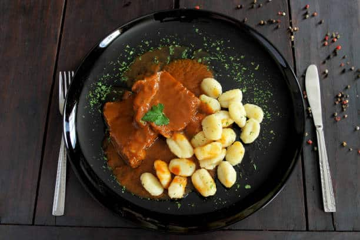
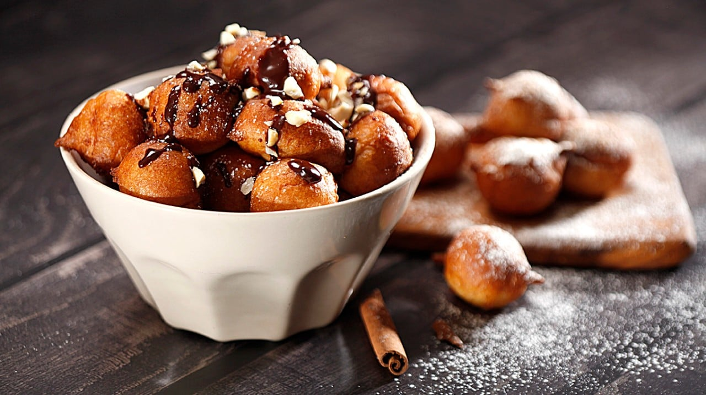

CROATIAN CUISINE
 Black risotto
Black risotto
Black risotto similar to the Italian dish, but with a distinct Croatian twist. Black risotto is often served as a main course in coastal restaurants and is a popular dish during summer months. It's typically garnished with chopped parsley and lemon wedges, which add freshness to the rich, savory flavors of the dish.
 Peka
Peka
This is a popular Croatian dish that's made with meat, vegetables, and potatoes that are slow-cooked in a covered dish with hot coals. It's typically flavored with rosemary and garlic and is a specialty of the Dalmatian region.

Pasticada
Pasticada is a traditional Croatian beef stew that originated in the coastal city of Split, in the Dalmatian region. It's a slow-cooked dish and the meat is then served with gnocchi or other pasta, along with the sauce and a side of boiled vegetables, such as carrots, potatoes, and green beans.

Fritule
Fritule is a traditional Croatian pastry. It's a small, deep-fried doughnut-like pastry that's flavored with raisins and often dusted with powdered sugar.
 Brodet
Brodet
Brodet is a traditional fish stew in Croatia made with a variety of local fish and shellfish, such as squid, octopus, shrimp, mussels, and various types of white fish. The seafood is cooked in a large pot with onion, garlic, white wine, tomato paste, fish stock, along with a variety of herbs and spices.